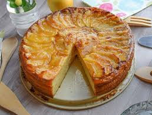

Tarta de Manzana
Una receta clásica que nunca falla. Solo necesitas manzanas, harina, huevos y un toque de canela. Es ideal para compartir en familia durante una tarde de café.
Bienvenido a Recetas Caseras, un espacio dedicado a los amantes de la cocina tradicional. Aquí encontrarás recetas fáciles, rápidas y con ingredientes que seguramente tienes en casa.
Una receta clásica que nunca falla. Solo necesitas manzanas, harina, huevos y un toque de canela. Es ideal para compartir en familia durante una tarde de café.
Jugoso por dentro y dorado por fuera. Se prepara con especias naturales, papas y verduras frescas. Perfecto para un almuerzo nutritivo.
Una opción saludable y colorida con lechuga, tomate, pepino y aguacate, aliñada con limón y aceite de oliva. Ideal para acompañar cualquier plato.
Cocinar no tiene por qué ser complicado. Te dejamos algunos consejos básicos: